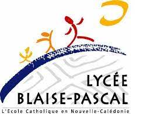
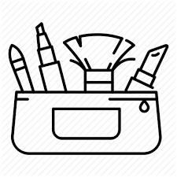
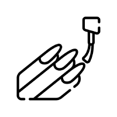
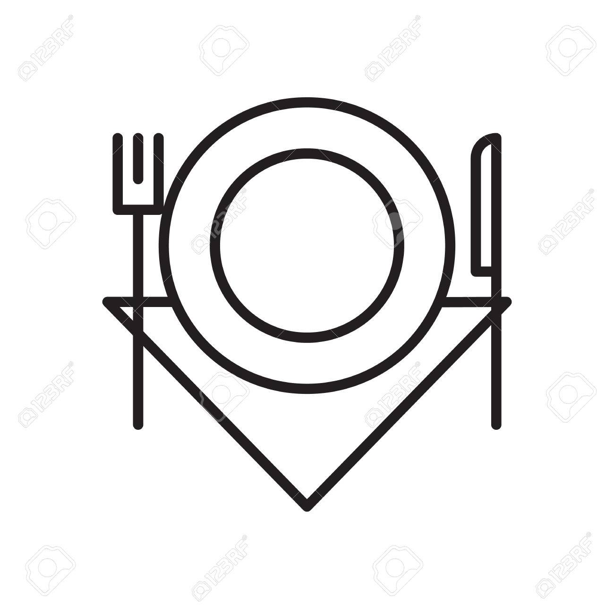

Profil
À propos de moi
Phrase intro perso
Qualités
Défauts
Langues
-
Français
Langue maternelle -
Anglais
Lu, écrit et parlé : pratique régulière. -

Japonais
Notions scolaires -

Italien
Faibles notions -

Espagnol
Faibles notions
Informatiques
HTML
CSS
PHP/MySQL
JavaScript
Python
Formations & Expériences
Études
-

Baccalauréat technologique
Lycée Blaise Pascal
Spécialité Système d'Information et Gestion. Obtention du diplôme avec mention Assez Bien en 2017. -
Mineure en psychologie
Université de Montréal (UdeM)
-
Développeur Web et Web mobile
Chambre du Commerce et de l'Industrie (CCI)
Expériences
-
Préposée à l'entretien pour personnes en perte d'autonomie
Répit-Ressources de l'Est de Montréal
Réaliser la liste de tâches ménagères faites par les clients -
Barista/Serveuse
Café El Mundo
Accueillir et servir les clients; Ouvrir et fermer le café.
Loisirs
Artistiques

Esthétiques
Coiffure
J'aime beaucoup la coiffure : que ce soit le tressage, lissage, le fait de boucler, les décolorations et les colorations...Maquillage
J'ai toujours été fasciné par le maquillage. Petite, j'adorais me faire maquiller pendant les foires, les fêtes... Malheureusement, ma mère n'a jamais été très coquette. Mais dès qu'elle m'a autorisé le maquillage, je n'ai pas arrêter. J'aime surtout les "make-up" plutôt festif et extravagant : maquillage pour Halloween, pour sortir faire la fête, pour faire des "shooting" photo...

Manucure
La manucure a toujours été quelque chose de j'adore : que ce soit de me faire faire les ongles ou de faire mes ongles ou ceux de quelque d'autre. Assortir les couleurs, faire divers motifs...Photographie
Paysages
Généralement, lorsque je me sens bien (que ce soit en sécurité, à l'aise...), j'aime prendre en photo l'endroit où je me trouve comme pour garder un souvenir de l'instant : pouvoir l'emporter avec moi et avoir l'impression d'y être quand je tombe sur mon cliché.

Nourriture
Étant une métisse de plusieurs cultures différentes et une grande famille, je passe énormement de temps à des repas (très souvent) familliaux. C'est comme ça que j'ai pris goût à prendre en photo la nourriture : que ce soit les tables "buffets" dans ma famille, mes sorties aux restaurants...Portraits
Je suis quelqu'un de très tournée vers la famille. Il n'y a personne sur cette Terre que je respecte et qui m'apporte autant d'amour, de réconfort et de bonheur en général que ma famille. Prendre en photo mes soeurs, mes cousins, mes oncles et mes tantes... C'est toujours un plaisir de pouvoir les avoir avec moi en photos.Musique
Chant
J'ai toujours adoré chanter. Depuis que je suis haute comme trois pommes, je chante plus que je ne parle. À l'époque, j'ai dû commencer par chanter du Lorie et du Britney Spears en couche dans mon salon. En grandissant, j'ai pris des cours de chant pour m'améliorer. J'ai fais quelques concerts également. Malheureusement, j'ai délaissé les cours de chant pour me concentrer sur mes études.Cinématographie
Films
Séries
Tutoriels
Littérature